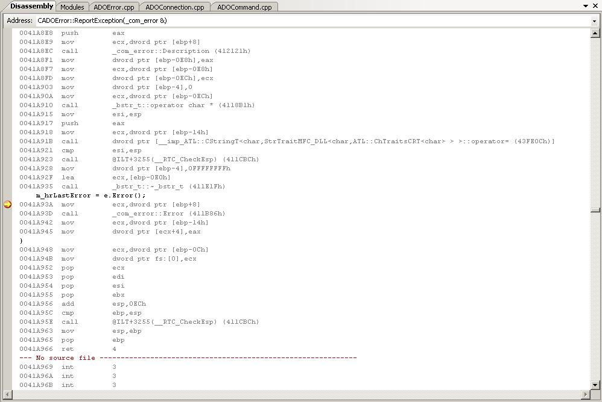

Debugging with Visual Studio 2005/2008, Part 2: Setting up the IDESetting up the IDE for the debuggerby Patrick MancierIn this article series, we discuss the concepts of debugging with Visual Studio 2005/2008. Part one covered general debugging concepts; part two will explain how to configure the Visual Studio IDE for debugging. Setting up the IDE for the debuggerIDE BehaviorThe Visual Studio IDE is designed to act as a workspace. It is very close to a multiple document interface with a twist in that it provides a rich set of docking controls in order to arrange your workspace. It is fully customizable by the user, down to where the window panes are placed, how the menu items are arranged and the buttons available on toolbars. It is up to the individual as to how this workspace is set up but generally most people have a menu and toolbars on top, an adequately sized code window, a solution/class/resource browser on the left or right of the screen, and an area below the code window that has all the other various windows used in programming and debugging. The Visual Studio IDE is designed to maintain different profiles while coding or running. When you execute a program through the IDE as a debug session, the IDE changes its appearance from how it looks as a coding profile to the arrangement as the debugging profile. It is entirely possible to make each profile look exactly the same, but in practice this is impractical. For example while coding you may want to maximize your code writing space while in debug you want to split this space between the code itself and the watch variables pane. On a good day, you can launch your program from the IDE, debug it, and switch from code view to debug view. You debug your program and when you close it, the IDE then switches back to the code view. As you can see from the examples below each view serves different purposes and it is up to the individual as to how to arrange these views for maximum benefit. Below is a typical example of the code view in the IDE.Below is a typical example of the debugging view in the IDE Debugging OptionsGeneralVisual Studio has a rich set of options available for debugging. Many of these options involve the .NET framework and do not serve our purposes here. To get to the debug options for Visual Studio go to Tools/Options and then open up the Debugging selection in the tree. Below are some of the pertinent option descriptions for C++ use. Ask before deleting all breakpoints - This option if set will 'warn' the user before choosing to delete the breakpoints, otherwise it will do it silently. There is a button that can be added onto the toolbar to delete all breakpoints.Enable address-level debugging - This tells the debugger to enable the things like the disassembly window, register windows and address breakpoints during the debug session. Show disassembly if source is not available - This will disassemble code at the points that the source does not exists. Enable breakpoint filters - Enables/Disables the ability to set filters on breakpoints affecting processes and threads. Require source files to exactly match the original version - This simply means that when debugging if the source files and the symbolic debugging information do not match that the debugger will not launch unless specified by the user to do so. The IDE will ask to provide the matching source as an option. Warn if no symbols on launch (Native Only) - The debugger will prompt the user that it cannot find the symbols file for native code. Unless you're doing some advanced debugging, this usually isn't an issue. SymbolsThe Symbols dialog is designed to set up the program to use debugging symbols for various library calls that Microsoft uses. A symbol file contains the same debugging information that the executable contains, the only difference being it is stored in a debug file (dbg) or a program database file (pdb). This can be used for example to debug a DLL file whose code is not referenced directly. This dialog is where you can specify various dbg and pdb files or to reference and to cache symbols from a symbol server. Microsoft maintains symbol servers for all of their major O/S's and other Microsoft products. The idea is to point to this symbol server, cache the symbols and use them in debugging. Basically this will give you an idea of what libraries are being called on the operating system level during program execution. Below is the dialog with the address of the Microsoft symbol server added and a directory to cache the symbols. Below is what happens after adding the Microsoft symbol server and pressing OK. Below are a set of links that talks more in depth about symbol files and what they do. Symbol server linkDownloading Symbol Package How to use the Symbol Server Customizing an IDE ToolbarAs previously mentioned, the Visual Studio IDE workspace is completely customizable. This was true even with previous versions of Visual Studio before 2005. The default configuration of the IDE is adequate for most things but for debugging it is a bit lacking. For example, the debug bar does not come by default with the delete all breakpoints button. This is a very useful button to have because it makes it simple to remove all breakpoints once a problem has been hashed out. To begin customizing a toolbar, right click somewhere on the menu bar of the IDE. A long list of available toolbars will be presented. On the last item of the choices is 'Customize'. Select this and the Customize dialog will pop up. Select the 'Commands' toolbar. You will see two list boxes, one called 'Categories' and another called 'Commands'. Scroll down on the Categories side and select 'Debug'. Then scroll down on the Commands side and select 'Delete All Breakpoints'. Now this is where it gets interesting. You need to position your 'Build' or 'Debug' toolbar close to the dialog box. You can either leave it where it is, or drag it out of its dock and pull it close to the open dialog. Now, select the 'Delete All Breakpoints' from the categories area and drag and drop it onto your toolbar. You should now see it available for use. Setting up various debug windowsSetting up the various windows for use in the IDE is fairly simple, it's just a matter of knowing where to find them. You can drag and drop each individual window on any of the available dockers, but the ideal place is usually right below the code window. However this placement it strictly up to the preference of the user. While your program is running in debug, select Debug and Windows top see the available options. As you can see there are a lot of options to display various debugging items. Below is a description of what the window is for and a real running example of what each of these windows looks like in practice. In order to get these examples, below is a snapshot of the IDE after setting a breakpoint and having the code execute it. In this example, the program is processing an exception that was thrown, and the breakpoint is set up in order for the programmer to view the value of m_szLastError string. Breakpoints Window that at a glance displays the status and the descriptive items associated with program breakpoints  Output The 'Trace' window, it is usually displayed in both code and debug views. You can see in this example that the first chance exception was thrown. Watch Will allow the user to select the variables and objects in the program and display their values. Autos Very similar to the watch and locals windows except along with the value of the object or variable, it also displays the expressions from the current line of code some of it around it. You can see that it picks up more than just the current scope of the instruction pointer, it has picked up the variables from the entire function. Locals Similar to watch except that it displays all the local variables and objects that are being referenced in the current scope. Immediate Designed to allow the programmer to type in an expression or a variable and get a response immediately given the scope of the program execution. Call Stack Very useful for when a breakpoint is hit or when the program calls an exception. Assuming the call stack is intact, it gives the user a history of program calls to get to the stop execution point. The user can then select any of the entries to 'go back in time' of the execution and trace backwards things that were happening. When the user does this, the current state of the registers and the variables are changed to reflect the scope that the user is currently looking at. Threads Gives an overview of the currently running threads, their ID's category, Name, Location and priorities. Disassembly Displays the disassembled machine code at the point of the break. This is admittedly for advanced programmers but can be very useful if used properly. It can track down exactly what the compiler has done with machine code; you can see line by line how the system registers are being used. This window can be displayed in various modes, but the default is to show the source code inline with the assembly code. Registers Displays the current system registers. This would normally be used in conjunction with the disassembly window because under normal source code debugging, it is hard to know exactly what each register is supposed to do. There are typical uses for registers that the compiler uses, for example, a return code would be put into the EAX register. Prev: Part 1: Debugging Concepts Next: Part 3: Using Breakpoints Effectively Related articles Debugging with Visual Studio Part 1: Debugging Concepts Debugging with Visual Studio Part 3: Using Breakpoints Effectively Debugging with Visual Studio Part 4: Setting up Code for the Debugger Debugging with Visual Studio Part 5: Using Trace and Log Messages Debugging with Visual Studio Part 6: Remote Debugging Main debugging page GDB tutorial bug prevention, debugging strategies, tips, and gotchas. hunting segmentation faults and pointer errors. Valgrind Skip Stepping Into Functions with Visual Studio's NoStepInto Option. |